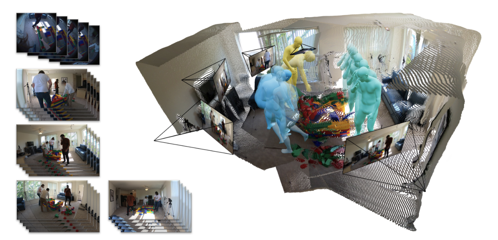
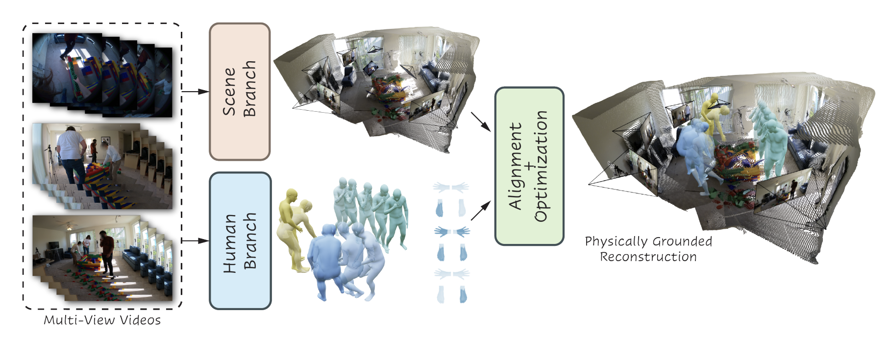
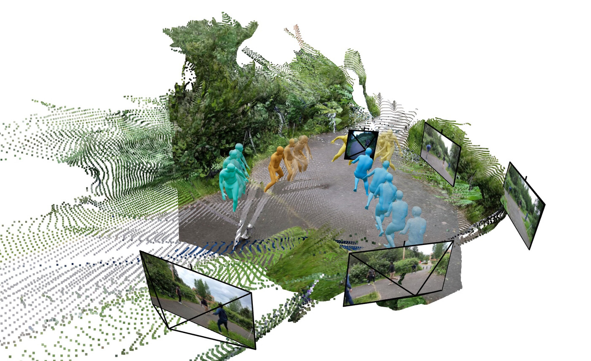
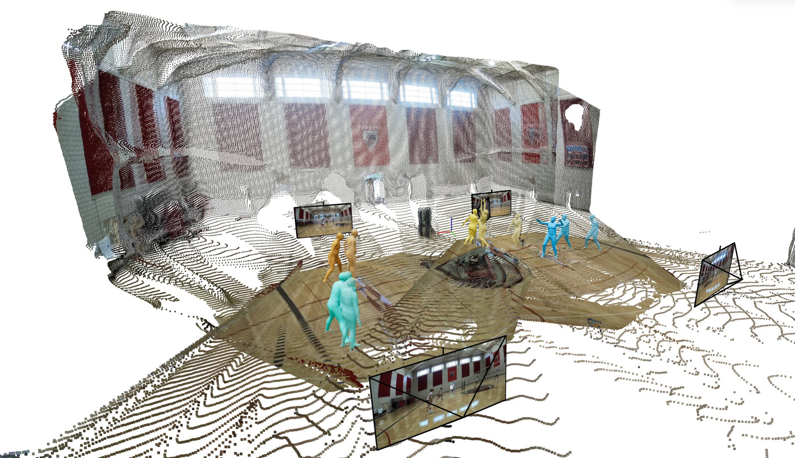
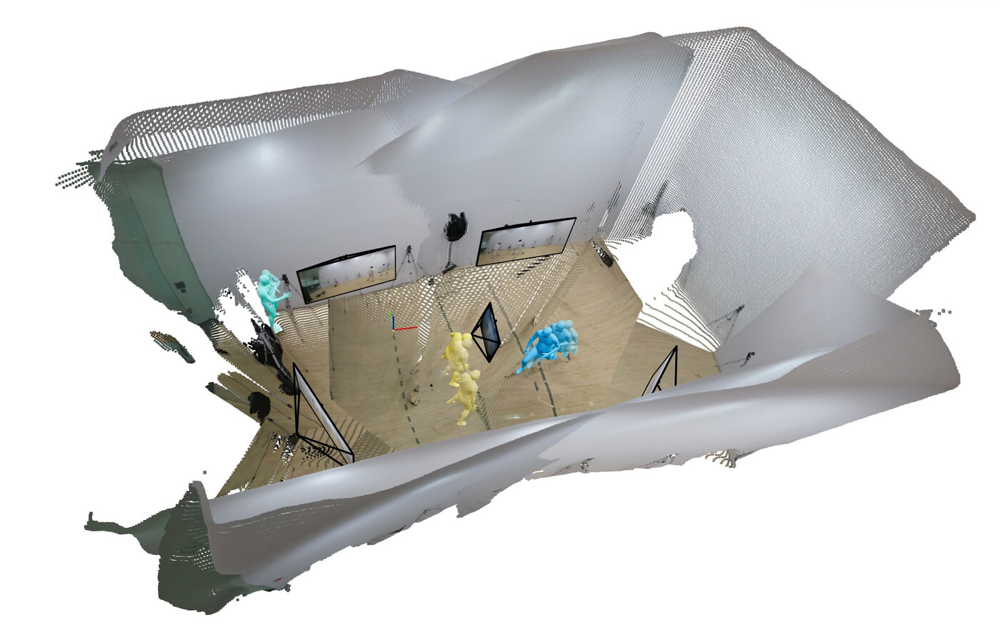
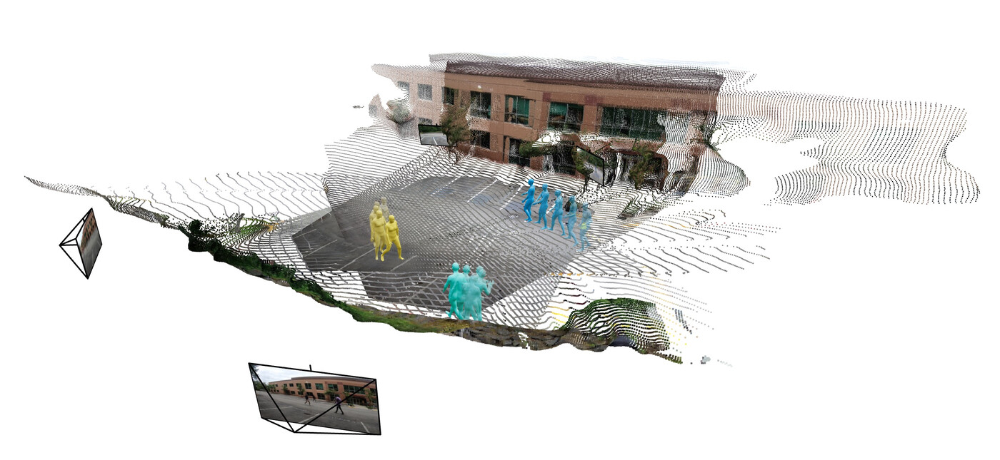
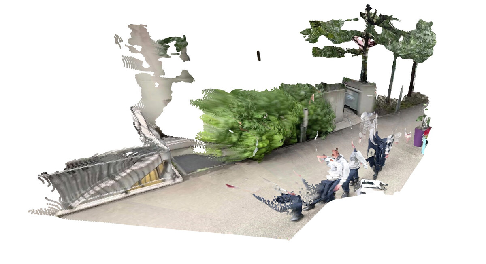

TROPHIES: Temporal Reconstruction of Places, Humans,
and Cameras from Multi-view Videos

Overview of TROPHIES. Given temporally synchronized video streams, TROPHIES jointly reconstructs dynamic humans, static scene geometry, and camera trajectories within a globally consistent 4D space. A human branch and a scene branch are coupled by global alignment and optimization, enforcing scale, contact, gravity, and temporal consistency in a shared world coordinate frame.
Abstract
Reconstructing humans and their surrounding environments in a globally consistent 4D space is essential for comprehensive perception. Existing pipelines often assume single-view inputs or decouple humans, scenes, and cameras, which makes coherent geometry, stable motion, and physically aligned trajectories difficult to recover. TROPHIES introduces a unified human-scene-camera reconstruction task from multi-view videos and jointly estimates dynamic humans, static scenes, and camera poses in one global coordinate frame. The framework combines temporal and spatial human reasoning, human-aware static scene reconstruction, and a global optimization stage that enforces scale consistency, contact priors, gravity alignment, and cross-view temporal coherence.
Method

Pipeline overview. TROPHIES decomposes reconstruction into a Scene Branch, a Human Branch, and a global Align-and-Optimization stage. The scene branch is a plug-and-play module for dense multi-view reconstruction backbones such as DUSt3R, MonST3R, and CUT3R; the human branch estimates temporally coherent SMPL body parameters from synchronized views; and the final optimization stage jointly refines humans, scenes, and cameras under consistent geometry and contact-aware constraints.
Demo Video
Project video for TROPHIES: unified reconstruction of places, humans, and cameras from multi-view videos.
Additional Qualitative Results
Supplementary material shows robust multi-view reconstruction across outdoor, indoor, studio, and sparse-camera settings.




Discussion and Limitations

TROPHIES uses SMPL to keep human motion structurally constrained and separated from static scene geometry. The supplement also notes current limitations: rapid egocentric viewpoint changes can reduce matching reliability; human-aware attention does not yet explicitly model other independently moving objects; and incomplete clothing masks may leave artifacts in reconstructed scenes.
Citation
@article{liu2026trophies,
title={TROPHIES: Temporal Reconstruction of Places, Humans, and Cameras from Multi-view Videos},
author={Liu, Jinpeng and Xu, Yukang and Li, Yutong and Liu, Xingyu},
journal={CVPR},
year={2026}
}Acknowledgements
This work is partially supported by the Ministry of Education, Singapore, under the Academic Research Fund Tier 1 (FY 2025), National University of Singapore Robotics Seed Grant, and a research gift from Futurewei Technologies Inc. The website template was borrowed from Michaël Gharbi and Jon Barron.